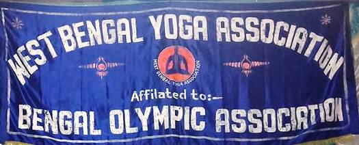
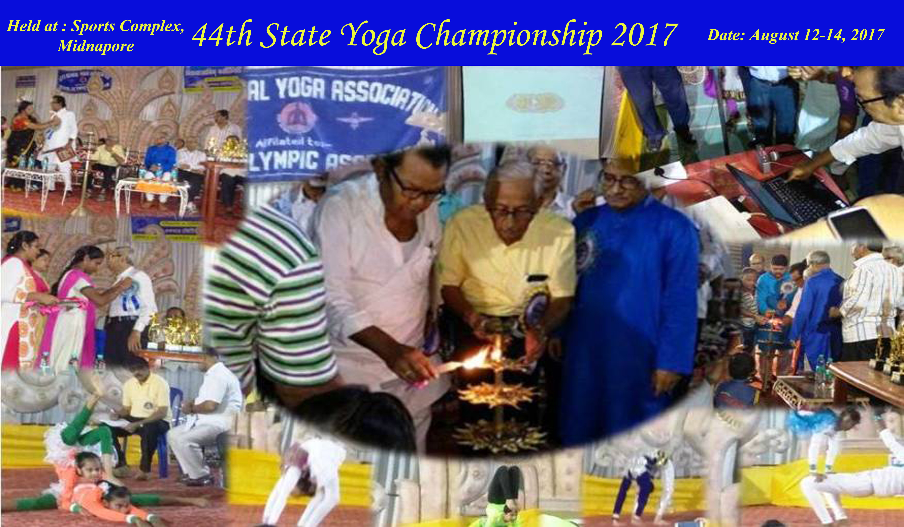
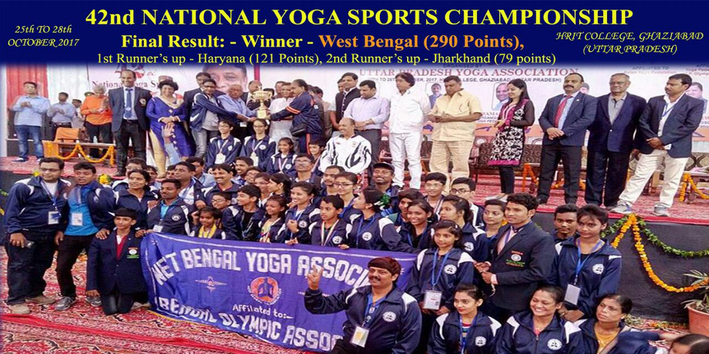
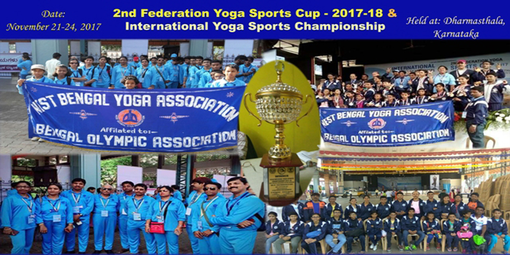
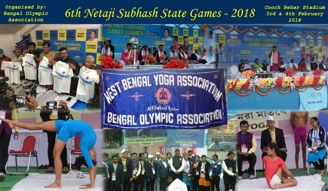
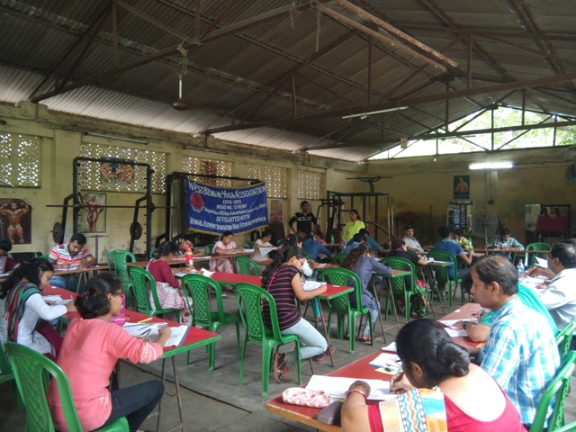

Annual Report 2017-18
A comprehensive review of the West Bengal Yoga Association's activities, achievements, and milestones during the year 2017-18.

Hony. President & Members
On the eve of the Annual General Meeting, at the first outset, I with a grievous heart would like to recapitulate the sweet memories and continuous service to the Association of our beloved Sri. Sekhar Byaborta – Ex. Vice-President of W.B.Y.A & Ex. General Secretary of Burdwan District Yoga Association, and Sri. Dilip Ghosh – Ex. Vice-President of W.B.Y.A & Ex. General Secretary of North 24 Pargana District Yoga Association, who have left us.
Before submission of my brief Annual Report of the whole year's activities for the year 2017-2018, I would like to take the opportunity to convey my sincere thanks and due regard to all the members for their warm co-operation in carrying out the duties of Hony. Secretary and the smooth running of the Association.
In brief, it may be said that our West Bengal Yoga Association is the pioneer of Yoga Culture, especially in the field of Yoga as Sports in West Bengal. It is also worthwhile to mention that our West Bengal Yoga Association is the Founder of the Yoga Federation of India and held the 1st National Yoga Championship under the leadership of Founder Secretary Late Bharatsree Kamal Bhandari. The members, Affiliated District Associations, and Calcutta Units have been offering their best and continuous services sincerely since its inception in the year 1972.
As a result, it is a matter of pride that in the field of Yoga, the West Bengal Yoga Association is the only Affiliated Unit of the Bengal Olympic Association, which is the controlling authority of Sports & Games in West Bengal.
State Yoga Championship
The 44th State Yoga Championship 2017 was held at Midnapore Sports Complex from 12th to 14th August 2017, organized by Midnapore Jagritinagar Phy. Culture Association under the auspices of West Bengal Yoga Association. 451 representatives participated from 16 Districts and Calcutta Clubs. 80 Judges were present all days for awarding their valued judgments.
Howrah District Won the Crown of Champion, with Nadia District being the Runner-up. The Championship was inaugurated by Sri. Mrigendra Nath Maity, M.L.A., in the presence of other distinguished guests.

National Yoga Championship
The 42nd National Yoga Sports Championship was held from 25th to 28th October 2017 at HRIT College Campus, Gaziabad, UP, organized by the UP Yoga Association under the Yoga Federation of India. The West Bengal Team, consisting of 42 competitors and 8 officials, won the title of Winner again securing 290 points (Haryana 1st Runner Up with 121 points).
In Yogasana, our competitors won 11 Gold, 9 Silver, and 3 Bronze. In Artistic, Rhythmic & Free Flow, we secured 4 Gold, 2 Silver & 1 Bronze. A Pre-National Coaching Camp was also held at Bowbazar Bayam Samity.

Federation Cup & International
The 2nd Federation Yoga Sports Cup was held from 21st to 24th November 2017 at Dharmasthala, Karnataka. The West Bengal Yoga Team won the Crown of Champion securing 122 points (Jharkhand 1st Runner Up with 79 points).
At the same venue, the International Yoga Sports Championship was held where the India Team became Winner. Many of our WB athletes—including Tanisha Das, Anusha Majumdar, Dayeta Sarkar, Mohan Kr. Singh, Madhubanti Dey & Manash Mukherjee—won Gold medals.

Netaji Subhas State Games
The 6th Netaji Subhas State Games organized by the Bengal Olympic Association was held in early February 2018 in North Bengal. WBYA conducted the Yoga Competition at Coochbehar Rajbati Stadium.
Sri. Rabindra Nath Ghosh and Sri. Swapan Banerjee welcomed the participants. At the Prize Distribution Ceremony, several of our National Players displayed Artistic & Rhythmic Yoga, which was highly appreciated by all guests and officials from other disciplines.

Yoga Diploma Course
Like earlier years, the six months Yoga Diploma Course commenced on 13th May 2017 with 71 candidates under the able guidance of Professor (Dr.) Subrata Ghosh, Dr. P. K. Gorai, Sri. Santosh Kr. Pal, and other NIS Coaches & experienced National Referees.
The examination was held in March 2018. Out of 71 candidates, 59 appeared in the examination and 55 examinees became successful in the said Diploma Course in which 3 got A+, 19 candidates secured A Grade, 22 secured B Grade, and 11 secured C Grade.

Web-Site Launch
The long-desired own WEB-SITE of the Association was successfully opened and inaugurated by Sri. Mrigendra Nath Maity at the Midnapore Sports Complex on the day of inauguration of the State Championship on 12th August 2017.

B.O.A. Activities & Govt. Grant
B.O.A. Activities: We participated in all the ceremonial activities organized by the Bengal Olympic Association during the year 2017-18 including the Olympic Day Run in which 30 of our players & officials took part.
Government Grant: It is a great pleasure and pride to have received a Government Grant of Rs. 5 lacs from the State Council of Sports & Youth Affairs, Govt. of W.B. for District Level and State Level Talent Search Tournaments. We conducted the District Level Tournaments and the State Level Talent Search Tournament was held on 4th March 2018 at Bowbazar Byayam Samity.
Least We Forget
I acknowledge with grateful thanks for all kinds of help and co-operation extended by different District Associations and Calcutta Units by organizing Competitions, Training Programmes, and the State Championship, as well as to all the Associate Members, Life Members & Judges for extending their all-around support in conducting the competitions.
Besides, I also express my sincere gratitude to the Bengal Olympic Association, Sports Council of West Bengal, School Sports Association of West Bengal for their guidance and co-operation, and Sri. Dilip Banerjee & other members of Bowbazar Byayam Samity for their warm co-operation in running our day-to-day activities throughout the year.